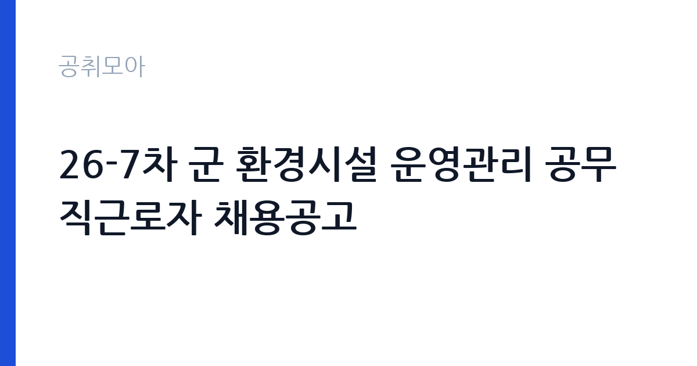

[국가기관] 26-7차 군 환경시설 운영관리 공무직근로자 채용공고
국방부 국군조직 육군 육군본부 · 전국 · 마감 2026-11-11 (D-12) · 출처 나라일터

한눈에 보는 모집 조건
| 기관 | 국방부 국군조직 육군 육군본부 |
|---|---|
| 공고명 | 26-7차 군 환경시설 운영관리 공무직근로자 채용공고 |
| 고용형태 | 공무직 |
| 근무지 | 전국 |
| 게시일 | 2026-10-30 |
| 마감일 | 2026-11-11 (D-12) |
지원자격, 이렇게 읽으세요
- 지역팀장 1명 기술반장 1명 환경관리관 10명
- 접수 ~2026-11-11 마감
- 세부 조건은 원문 공고문 확인
공무직 근로자는 공무원이 아니라 근로기준법이 적용되는 근로자이지만 기간의 정함이 없는 무기계약으로 채용되는 경우가 많아 정년까지 근무가 가능합니다. 채용은 공무원 시험과 달리 기관의 자체 전형으로 진행되고 인사 규정과 임금표를 적용받습니다. 이번 공고는 국방부 국군조직 육군 육군본부가 직접 진행하는 자체 전형입니다. 환경관리 직무는 학력과 경력을 크게 보지 않는 대신 건강 상태와 근무 지속 가능성을 확인합니다. 장비를 들고 계단과 화장실을 오가야 하므로 허리와 무릎 상태가 실질적인 조건입니다. 관련 경력자나 지역 거주자를 우대하는 조항이 붙기도 합니다. 국가공무원법상 결격사유 조회가 공통으로 적용됩니다. 제출서류는 공고문에 적힌 순서대로 정리하면 담당자가 확인하기 쉽습니다. 학력이나 전공 요건이 없는 공고라도 제출서류 목록은 그대로 적용되므로 서류 준비 부담은 줄지 않습니다. 자격 취득 예정자는 채용 공고의 예정자 허용 조항을 먼저 확인해야 합니다. 조항이 없으면 지원 자체가 반려될 수 있습니다.
이 공고의 포인트
이 건은 국방부 국군조직 육군 육군본부가 같은 시기에 낸 2개 모집분야 가운데 환경관리 직무입니다. 다른 직무 공고와 요건이 다르므로 지원 전에 모집분야 표를 대조해야 합니다. 이 공고의 첫 번째 포인트는 고용 형태입니다. 무기계약으로 채용되면 정년까지 근무가 가능해 재계약 부담이 없습니다. 반대로 기간제로 채용되는 공고라면 계약 기간을 먼저 확인해야 합니다. 두 번째는 업무 범위가 명확하다는 점입니다. 환경관리 직무로 채용되므로 배치 이후 담당 업무가 크게 흔들리지 않습니다. 세 번째는 근무지입니다. 전국 지역 근무로 수도권 공고에 비해 지원자 분포가 넓지 않아 상대적으로 경쟁이 분산되는 경우가 있습니다. 채용 규모가 크지 않아 면접 비중이 높은 전형이 될 가능성이 있습니다. 같은 직무로 함께 올라온 공고 3건 가운데 마감이 중간에 위치하므로 다른 공고와 일정이 겹치는지 확인하십시오. 다만 선발 인원이 1명으로 많지 않아 자격을 갖춘 지원자가 몰리면 경쟁률이 높아질 수 있습니다.
전형은 어떻게 진행되나
1차 서류, 2차 면접의 2단계로 진행되는 구성이 일반적입니다. 서류에서는 자격 요건과 경력 증빙을 확인하고, 면접에서는 실제 업무 수행 능력과 조직 적응을 봅니다. 직무에 따라 필기시험이나 실기, 컴퓨터 활용 시험이 추가되기도 하므로 공고문의 전형표를 먼저 확인하십시오. 단계별로 합격자만 다음 전형에 응시할 수 있고, 단계마다 응시 자격 확인 서류를 다시 제출해야 하는 경우가 있습니다. 최종합격자 발표 후에는 신원조회와 채용 신체검사가 남아 있습니다. 전형 일정이 공고문에 날짜로 명시되어 있으니 달력에 옮겨 두고 준비하십시오.
원문에서 확인한 전형 방식
○ 모집분야 : 지역팀장, 기술반장, 환경관리관 ○ 선발직급 : 공무직근로자 ○ 고용형태 : 정규직(첨부파일 참고) ○ 자격요건 : 자격증, 경력 등(첨부파일 참고) ○ 접수기간 : 2026년 11월 2일 ~ 2026년 11월 11일 ○ 응시방법 : 우편접수 ○ 문의처 : 042-550-4675, 042-550-4692
이런 분께 추천해요
- 장기간 성실하게 근무할 수 있는 분
- 신체 활동에 무리가 없는 분
- 위생 관리 절차를 지킬 수 있는 분
지원 전 체크리스트
- 응시자격 요건과 경력 기준을 충족하는가 — 경력은 증명서로 입증해야 합니다
- 무기계약 여부와 정년 기준을 공고문에서 확인했는가
- 제출서류 목록을 모두 준비했는가 — 누락 시 서류 단계에서 탈락합니다
- 접수 마감 2026-11-11 이전에 접수 방식을 확인해 제출했는가
모집 일정과 제출 타이밍
2026-10-30에 공고가 올라왔고 접수는 2026-11-11까지입니다. 남은 기간은 12일이며, 이 기간에 자격증 사본과 경력증명서, 주민등록등본 같은 기본 서류를 모두 준비해야 합니다. 경력증명서는 발급에 며칠이 걸리는 경우가 있으니 가장 먼저 신청하십시오. 접수는 온라인과 우편·방문으로 나뉘는 경우가 많고, 우편 접수는 도착 기준으로 판정되므로 마감일 소인만 믿으면 안 됩니다. 면접 일정은 서류 발표 후 개별 통보되므로 제출 후에도 연락을 받을 수 있도록 유지해야 합니다. 마감 이후에는 어떤 사유로도 접수가 인정되지 않으므로 하루 전 제출을 목표로 하십시오.
직무 이해하기: 국가기관
국방부와 각 군 본부는 국방 정책과 군 조직 운영, 인력 관리를 담당합니다. 예하 부대·사령부는 작전과 훈련, 군수 지원, 시설 관리 업무를 수행하고, 군무원과 공무직근로자가 행정·기술·시설 분야를 맡습니다. 부대별로 근무지가 전국에 흩어져 있고, 보안 규정과 신원조회 절차가 일반 기관보다 엄격합니다. 직위에 따라 교대 근무나 당직이 포함됩니다. 환경관리 업무는 시설의 청결과 위생, 폐기물 처리를 담당합니다. 건물 내부와 외부 구역을 순찰하며 청소 상태를 점검하고, 폐기물 분리 배출과 수거 일정을 관리합니다. 소독과 방역 작업을 진행하고 사용한 약품과 장비를 기록합니다. 행사나 이사 같은 특수 상황에서는 추가 작업이 발생합니다. 공무직 환경관리사는 단순 청소를 넘어 위생 관리 기준을 지키고 작업 일지를 남기는 역할까지 맡습니다. 근무조는 사업 일정과 기상 상황에 맞춰 편성되므로 면접에서 배치 구역을 확인하는 것이 좋습니다. 업무 강도와 근무 시간대는 부서 배치에 따라 달라지므로 면접에서 확인하는 것이 가장 정확합니다. 원문에 '선발직급 : 공무직근로자 ○ 고용형태 : 정규직(첨부파일 참고) ○ 자격요건 : 자격증, 경력 등(첨부파일 참고) ○ 접수기간 : 2026년 11월 2일 ~ 20'라는 조건이 명시되어 있습니다.
자기소개서 작성 팁
지원서는 구체적인 생활 경험이 효과적입니다. 이전 근무지에서 위생 관리를 맡았던 경험, 장비를 다뤄본 경험을 적으십시오. 장기 근무 의사와 출퇴근 가능성을 분명히 쓰고, 체력 관리 방법을 한 줄 덧붙이면 신뢰를 줍니다. 문항별 글자 수 제한을 먼저 확인하고, 각 문항의 첫 문장에 결론을 배치하는 방식이 읽기 쉽습니다. 지원 동기는 기관의 어떤 사업에 기여하겠다는 한 문장으로 시작하고, 이어서 본인의 경험을 근거로 붙이십시오. 감점을 피하려면 다른 기관에 보낼 수 있는 범용 문장을 그대로 쓰지 않는 것이 중요합니다. 기관 이름과 사업명이 문장 안에 자연스럽게 들어가야 준비도가 드러납니다.
면접 준비 포인트
면접에서는 성실성과 근무 지속 의사를 확인합니다. 힘든 작업을 오래 할 수 있는지, 위생 관리 기준을 어떻게 지켜왔는지 묻습니다. 함께 일하는 사람과 역할을 나누는 방식도 평가 요소입니다. 출퇴근 시간을 지킬 수 있는지가 실질적인 판단 기준이 됩니다. 면접은 공고문에 적힌 직무 내용을 얼마나 이해하고 있는지 확인하는 질문으로 시작하는 경우가 많으니, 모집분야 문구를 그대로 읽어 두는 것이 도움이 됩니다. 직무 특성상 체력이나 근무 시간에 대한 질문이 나올 수 있으므로 솔직하게 답하고 관리 계획을 함께 제시하십시오.
급여·근무조건 읽는 법
국방부 국군조직 육군 육군본부의 구체적인 보수 수치는 이 공고 원문의 처우 항목과 보수표에서 확인해야 합니다. 공시 자료로 확인되지 않은 금액은 이 글에서 추정해 제시하지 않습니다. 알리오 2025년 결산 공시 기준 공공기관 전체 일반정규직 1인당 평균보수는 7,376만 9천원, 신입사원 평균초임은 4,031만 6천원입니다(무기계약직 미포함). 공무직 환경관리 보수는 기관 임금표의 기본급에 정액급식비·명절휴가비 등이 더해지는 구조입니다. 무기계약 신분이면 정년까지 근무가 가능하고 매년 임금이 조정됩니다. 2026년 적용 최저임금은 시급 10,320원, 월 환산 2,156,880원(주 40시간·209시간 기준)입니다. 고용노동부 고시 제2025-47호로 확정된 금액입니다. 공고문에 금액이 제시되지 않은 항목은 원문 보수표나 처우 설명에서 확인해야 하며 확인되지 않은 수치는 쓰지 않는 것이 원칙입니다. 비교할 때는 월 급여뿐 아니라 상여·명절휴가비·복지포인트·초과근무수당까지 포함한 연간 총액으로 계산하십시오. 기간제라면 계약 기간 동안의 총액을, 무기계약이라면 호봉 상승과 정년까지의 누적 소득을 기준으로 판단하는 편이 정확합니다.
자주 묻는 질문
- 선발 인원은 몇 명인가요?
공고문 기준 1명입니다. 직종별로 인원이 나뉘는 경우가 있으니 모집분야 항목을 함께 확인하십시오. - 근무지는 어디인가요?
전국 지역의 국방부 국군조직 육군 육군본부 소속 근무지입니다. 세부 주소와 출퇴근 조건은 원문 공고문에서 확인할 수 있습니다. - 보수는 얼마인가요?
채용 신분(공무직)과 기관 임금 규정에 따라 정해지며 구체적인 금액은 공고문 처우 항목에 제시됩니다. 금액이 공개되지 않은 경우에는 원문의 보수표를 확인하십시오.
함께 보면 좋은 공고
[국가기관] 테스트 — 마감 2026-11-11[국가기관] 국무조정실·국무총리비서실 전문임기제공무원 채용 변경공고 — 마감 2026-11-09[국가기관] 육군 전투지위훈련단 BCTP 예비역 장성관찰관(군단 ·사단선임, 군단작전지속지원) 채용 공고 — 마감 2026-11-09출처: 나라일터 공개정보를 바탕으로 공취모아가 정리한 안내글입니다. 모집 조건·일정은 변경될 수 있으니 지원 전 반드시 원문 공고문을 확인하세요. 본 글은 정보 제공용이며 합격을 보장하지 않습니다.